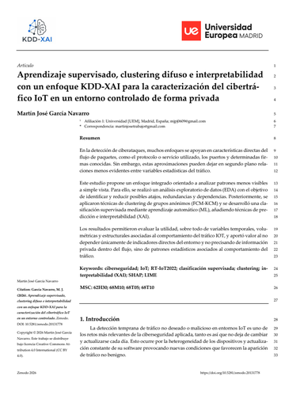

Estudio de patrones de cibertráfico IoT

Análisis del dataset RT-IoT2022 mediante exploración de datos, agrupamiento, clasificación e interpretabilidad, con resultados limitados al entorno controlado del dataset.
Consultar la ficha del estudio de cibertráfico IoT